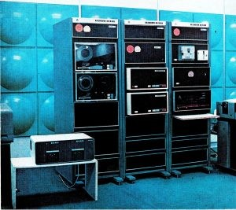 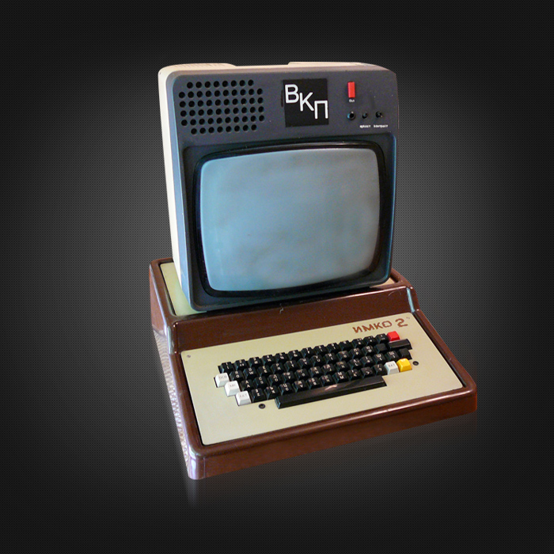 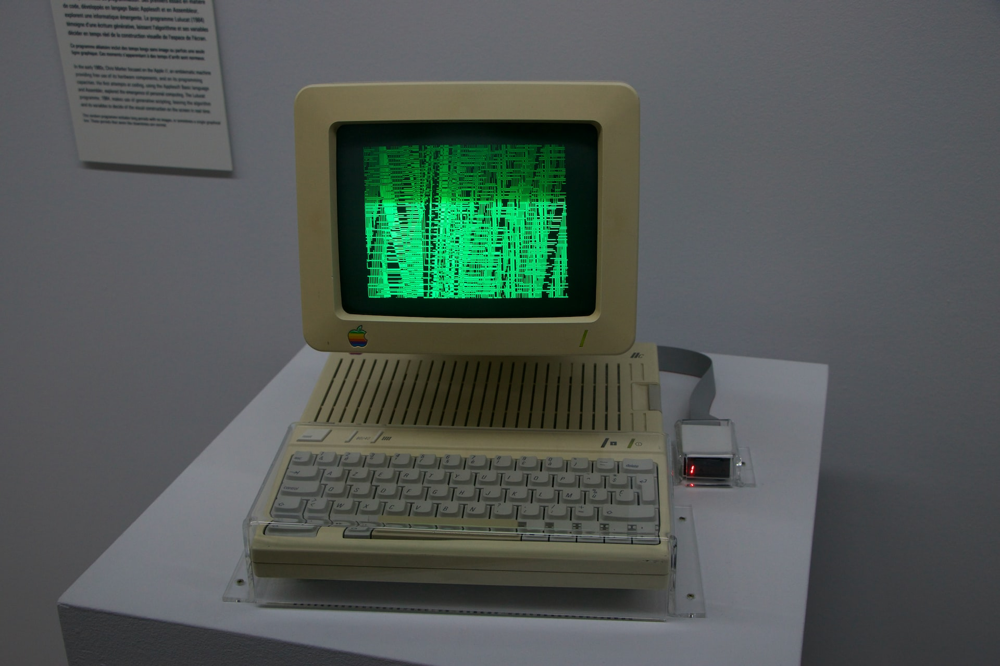 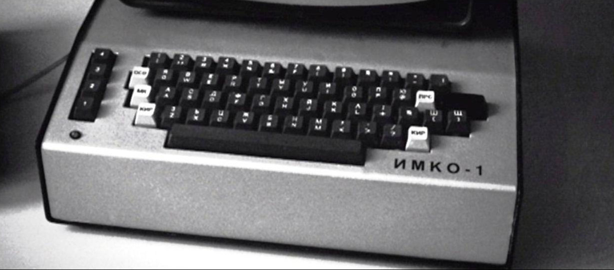 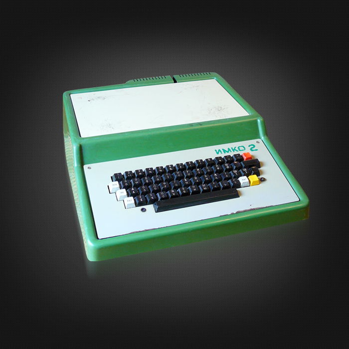
Производството на компютри е исторически дял на електронната промишленост в България,
развил се бурно през 1970 – 1980-те години, но бързо залязъл през 1990-те след прехода към пазарна
икономика.
Развитието му в рамките на плановата икономика е пример за извършването на целенасочени
капиталовложения и развитие на нов промишлен сектор от страна на държавата, за голямата роля на
СИВ в осигуряването на пазари и за насърчавана от страна на държавата политика на копиране.
Първият български компютър е Витоша, разработен в края на 1961 г. и въведен в експлоатация в началото
на 1962 г. Изпълнението е с електронни лампи.
От 1967 до 1971 г. се произвежда ЗИТ-151 – мейнфрейм компютър по лиценз от Facom 230 – 30 на Fujitsu.
Изпълнен е с полупроводникови електронни елементи, голяма част от които български.
В периода след 1971 г. се произвеждат ЕС ЕИМ от първо поколение, съвместна българо-съветска
разработка: ЕС 1020 и подобрен вариант ЕС 1020Б, ЕС 1030, ЕС 1040, както и от второ поколение: ЕС 1035
с подобрен вариант ЕС 1035Б, ЕС 1037. През 1971 г. ЕС 1020 е демонстрирана на панаира в Пловдив .
През 70-те и 80-те години на 20-ти век България произвежда компютри от единната серия: ЕС 1020,
ЕС 1022, ЕС 1035, ЕС 1037, ЕС 2709 (ИЗОТ 1014), както и голям брой периферни устройства. Сред
българските разработки са и миникомпютрите CM 1426 (ИЗОТ 1054C), CM 1706 (ИЗОТ 1055С),
CM 1504 (ИЗОТ 1056С) .
В периода 1979 – 1980 г. се преминава към производство на компютърни системи (наричани тогава
проблемно ориентирани комплекси – ПОК). Такива са например ПОК геология (ЕС 1035Б и специализиран
матричен процесор ЕС 2335); ПОК база за управление на големи складови комплекси (ЕСТЕЛ 4 и ЕС 1035Б);
ПОК ИНФОРГ за справочна информация и регистрираща дейност (СМ 4) и редица други.
През 1980 г. в ИТКР е създаден ИМКО-1, първият български персонален компютър. Следва ИМКО-2,
който се превръща в Правец-82 и през 1983 г. започва серийното производство на 8-битовите компютри от
серията Правец. Тези модели следват компютърната архитектура на Apple.
В периода 1983 – 1984 г. в ДСО ИЗОТ се разработват два IBM съвместими персонални компютъра – ИЗОТ 1036С
и ИЗОТ 1037С. Изот 1036C е функционално съвместим с IBM PC и е базиран на 16-битовия микропроцесор i8086,
ИЗОТ 1037С е точен аналог (копие) на IBM PC/XT и е базиран на 8-разредния микропроцесор i8088.
Серийното им производство започва през 1985 г. първоначално в завод „Електроника“, София.
През 1986 г. производството на двата компютъра е прехвърлено в ЗЗУ, Велико Търново. Успоредно с това
през 1984 започва и разработката на компютрите от серията Правец 16 – точен аналог (копие) на IBM PC/XT,
с процесори Intel 8088. Първоначално е разработен под името „ИМКО-4“.
В края на 1986 г. се създава ИМПТ (Институт по Микропроцесорни Технологии) към КМТ Правец
и на ИЗОТ е забранено да проектира и произвежда персонални компютри. Целта на тази реорганизация
е да се намалят разходите за производство, като то се съсредоточи в Правец. В резултат на тази забрана през
1987 г. ЗЗУ-Велико Търново спира производството на ИЗОТ 1036С (ЕС 1831), пререгистрира ИЗОТ 1037С
(ЕС 1832) като интелигентен терминал ЕС 8531. М2 и продължава да произвежда персонални компютри
до началото на 90-те години.
Повече за ИМКО 1-първият български персонален компютър:
С течение на годините думата ,,Правец“ е станала направо синоним на ,,български компютър“, но всъщност
Правеците не са дори първите български персонални компютри, защото си имат два предшественика – ИМКО 1
и 2. Именно те поставят началото на бъдещата бурна компютризация на България и разпространението на
персонални компютри в различни човешки дейности у нас.
Както вероятно ви е известно, съкращението ИМКО означава „Индивидуален микрокомпютър“. Създаването на
първия български персонален
компютър започва в изпълнение на задание, дадено през октомври 1979 г. от
Държавния комитет за наука и технически прогрес (ДКНТП) на Института по техническа
кибернетика и роботика (ИТКР) към БАН. Точната формулировка е: ,,създаване на малък компютър на
базата на микропроцесори“.
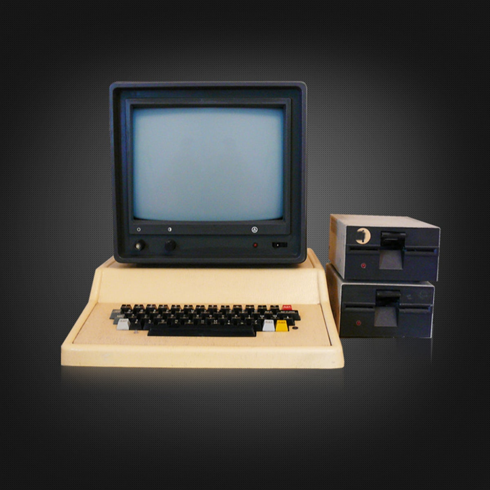 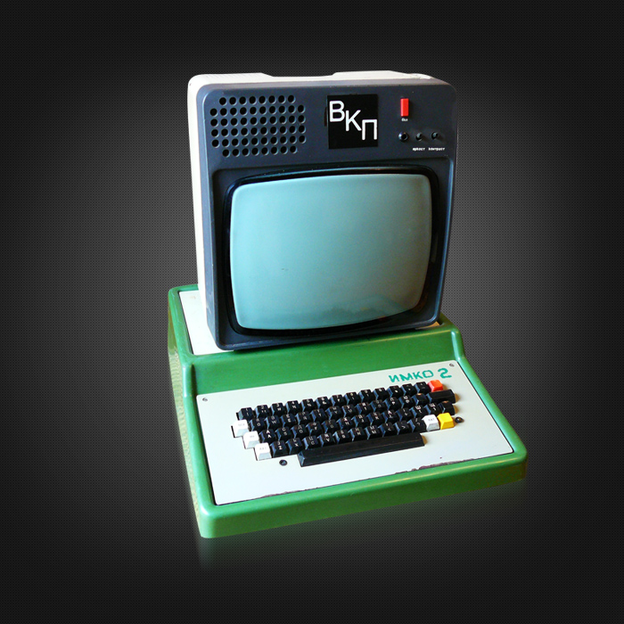 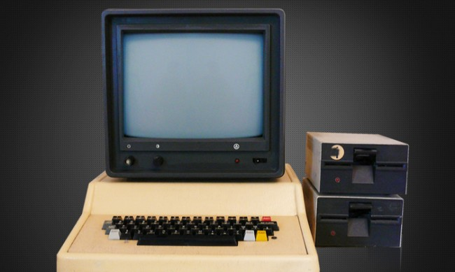 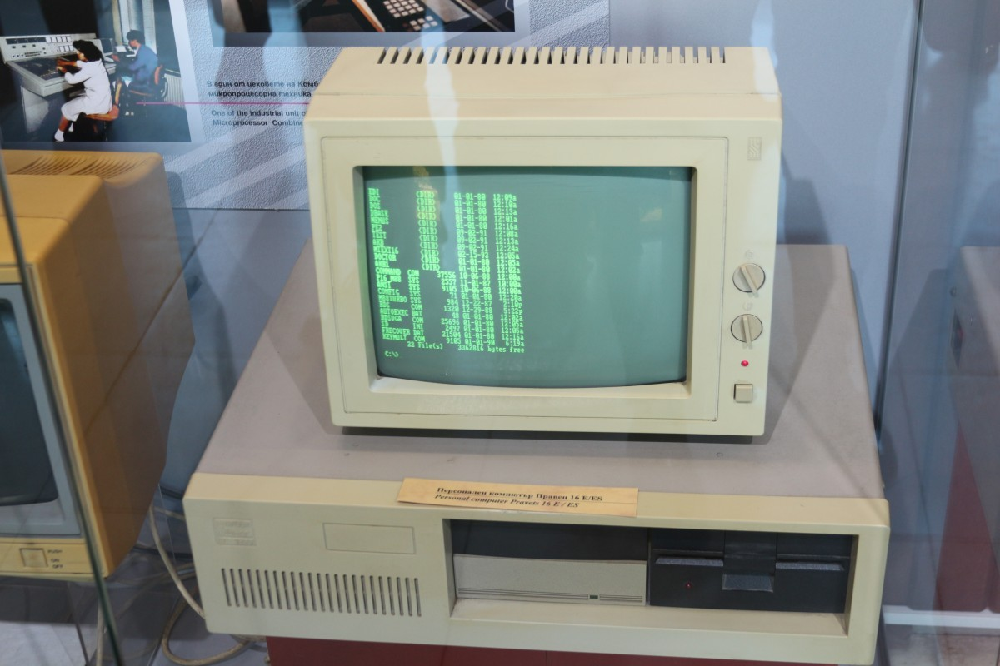 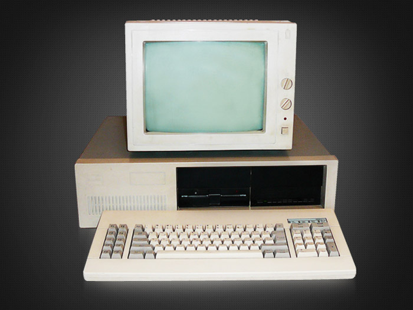
ИМКО-1 е разработен по модел на Apple II, но не разполага с флопидисково устройство,
тъй като по това време в България подобни не се произвеждат, а работи с магнетофонна лента,
ИМКО-1 разполага с допълнителни слотове и единични бройки са оборудвани с дискови устройства,
внесени от чужбина, а в останалите устройства за съхранение на данни са използвани касетофони.
Първото представяне на ИМКО-1 пред международна общественост се е състояло в Англия
на Международния симпозиум по роботика. Там е представена и система за управление на
робот-ръка на основата на ИМКО-1, наречена РОБКО-1. Системата е струвала приблизително 10 пъти
по-малко от аналогичните решения на американски и японски компании.
Повече за ИМКО 2-вторият произведен в България микрокомпютър:
ИМКО 2 е вторият произведен в България микрокомпютър. Моделът е доста рядък, защото от него са
произведено само няколко стотин бройки. Аналог е на Apple II Plus. Като началото на произведството му
е от 1982-ра година и в същата година и спира производството му.
Като операционата му система е ДОС 3.1, ДОС 3.2, ДОС 3.3 или ПроДОС. Като разновидност е, че има
модификации. Като предишните модели са били с кафява кутия. По-късните ИМКО-2 са със зелена кутия,
като вече изписва ПРАВЕЦ при включването си. Особености са, че се разпространява с монитор ВКП.
Дизайнът на подобява на оригиналният Apple 2 Plus. Като всички компютъри от серията Правец и
този модел е кирилизиран хардуерно, но понеже клавиатурата използва 7 бита за прехвърляне на
данните, кирилицата е на мястото на малките латински букви, като по този начин е възможно писане
само с главни латински или кирилски букви.
Като всички компютъри от серията Правец и този модел е кирилизиран хардуерно,
но понеже клавиатурата използва 7 бита за прехвърляне на данните, кирилицата е на мястото на
малките латински букви, като по този начин е възможно писане само с главни латински или кирилски букви.
ИМКО-2 не е се е продавал свободно.
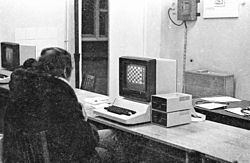 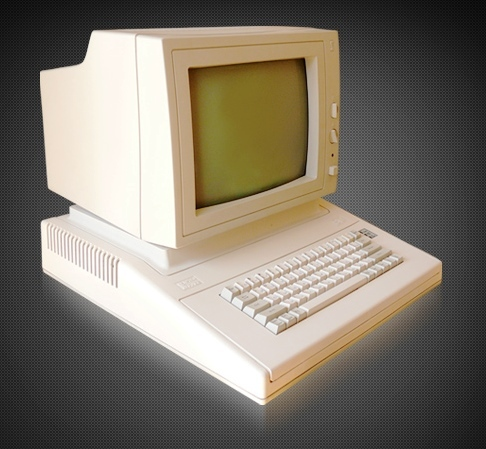 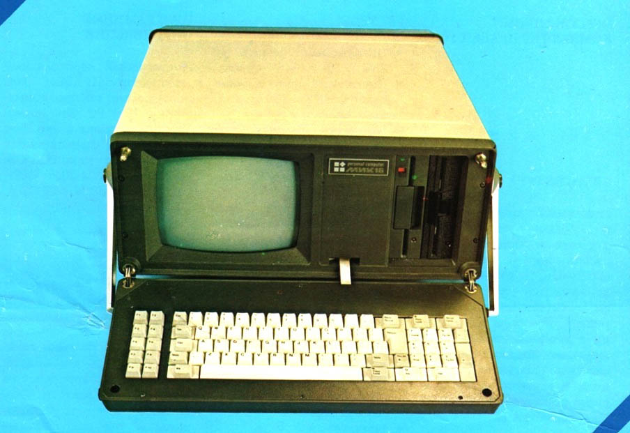 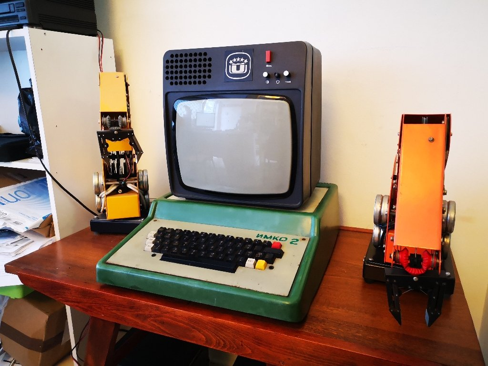 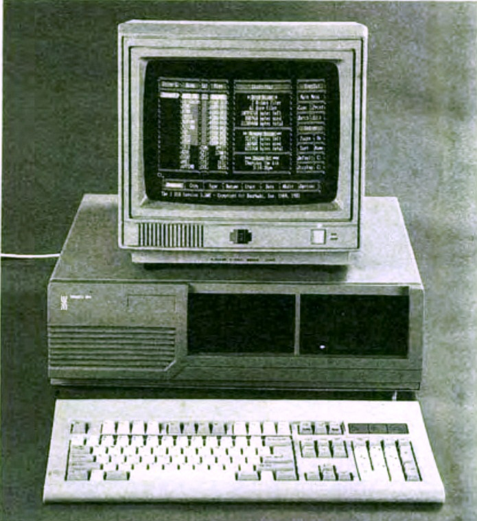
Автор: Мирослав Радославов Михнев,
5 клас, МГ "Баба Тонка", град Русе